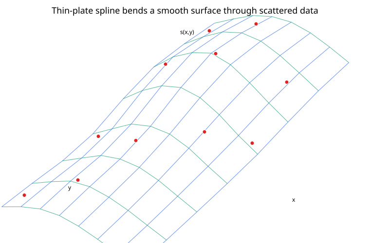
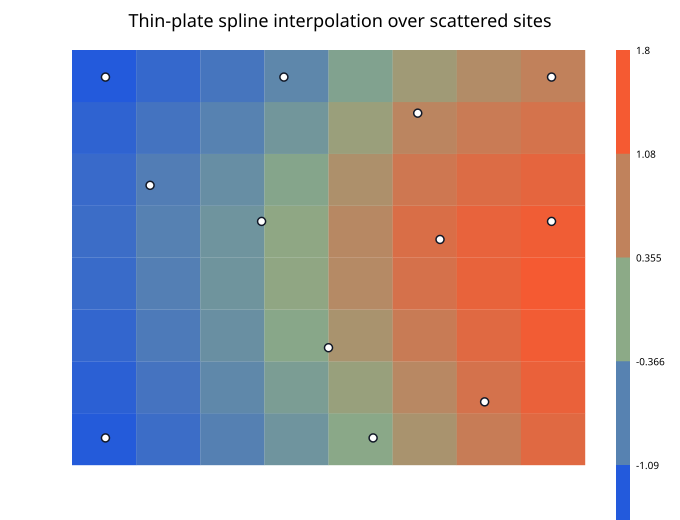

Thin-plate spline (TPS) interpolation is a smooth method for fitting a surface through scattered points in two or more dimensions.
In two dimensions, suppose we know values
$$ z_i $$
at locations
$$ \mathbf x_i = (x_i,y_i), \qquad i = 1,\ldots,N. $$
A thin-plate spline constructs a surface
$$ s(x,y) $$
that passes through every data value while minimizing a measure of bending.
The name comes from the physical analogy of a thin elastic plate that is forced through fixed points and settles into the least-bending shape compatible with those constraints.

In two dimensions, the classical thin-plate spline kernel is
$$ \phi(r) = r^2\log r. $$
At
$$ r = 0, $$
the limiting value is defined as
$$ \phi(0) = 0. $$
The interpolant is
$$ s(\mathbf x) = a_0 + a_1x + a_2y + \sum_{j=1}^{N} w_j \phi(\|\mathbf x - \mathbf x_j\|_2). $$
There are two parts:
I. an affine polynomial
$$ a_0 + a_1x + a_2y; $$
II. a weighted sum of radial basis functions centered at the data sites.
The radial component supplies flexible curvature, while the affine component is required by the mathematical structure of the TPS kernel.
At every data site,
$$ s(\mathbf x_i) = z_i. $$
Define
$$ K_{ij} = \phi(\|\mathbf x_i - \mathbf x_j\|_2). $$
Also define
$$ P = \begin{bmatrix} 1 & x_1 & y_1\\ 1 & x_2 & y_2\\ \vdots & \vdots & \vdots\\ 1 & x_N & y_N \end{bmatrix}. $$
The TPS coefficients satisfy the block system
$$ \begin{bmatrix} K & P\\ P^\top & 0 \end{bmatrix} \begin{bmatrix} \mathbf w\\ \mathbf a \end{bmatrix} = \begin{bmatrix} \mathbf z\\ 0 \end{bmatrix}, $$
where
$$ \mathbf a= \begin{bmatrix} a_0\\a_1\\a_2 \end{bmatrix}. $$
The lower block gives the side constraints
$$ P^\top\mathbf w = 0. $$
Written componentwise,
$$ \sum_{j=1}^{N}w_j = 0, $$
$$ \sum_{j=1}^{N}w_jx_j = 0, $$
and
$$ \sum_{j=1}^{N}w_jy_j = 0. $$
These constraints make the decomposition between the radial and affine parts unique under the usual geometric conditions.
In two dimensions, the sites must contain enough geometric information for the affine part to be determined. In particular, the points should not all lie on one straight line.
Duplicate data locations are also problematic for exact interpolation unless their values are perfectly consistent and the formulation is modified appropriately.
Every kernel term
$$ \phi(\|\mathbf x - \mathbf x_j\|_2) $$
depends on the distance from the query to one data site, but the coefficient vector is obtained from one global linear system.
Changing one observed value can therefore alter many or all coefficients and change the surface throughout the domain.
The contour plot makes this global coupling easy to see.

The classical two-dimensional TPS minimizes a bending-energy functional of the form
$$ J[s] = \iint \left[s_{xx}^2 + 2s_{xy}^2 + s_{yy}^2 \right] \, dx\, dy $$
subject to the interpolation constraints
$$ s(x_i,y_i) = z_i. $$
The second derivatives measure curvature. Minimizing their squared magnitude favors a surface that bends as little as possible while still passing through the required points.
This variational interpretation explains why thin-plate splines tend to look smooth without specifying a rectangular grid.
After solving for $\mathbf w$ and $\mathbf a$, evaluate a new point
$$ \mathbf x = (x,y) $$
by computing all distances
$$ r_j = \|\mathbf x - \mathbf x_j\|_2 $$
and then
$$ s(\mathbf x) = a_0 + a_1x + a_2y + \sum_{j=1}^{N}w_jr_j^2\log r_j. $$
For a query that exactly coincides with a data site, use
$$ r^2\log r = 0 $$
at $r=0$ by the limiting definition.
I. collect distinct scattered data sites $(x_i,y_i,z_i)$;
II. compute every pairwise distance
$$ r_{ij} = \|\mathbf x_i - \mathbf x_j\|_2; $$
III. build
$$ K_{ij} = \phi(r_{ij}); $$
IV. build the affine matrix $P$;
V. assemble the block system;
VI. solve for $\mathbf w$ and $\mathbf a$;
VII. evaluate queries with the radial sum plus affine term.
The matrix $K$ is dense.
For $N$ data sites, a straightforward direct implementation uses approximately:
Large datasets may require local approximations, sparse alternatives, iterative methods, or other kernel acceleration techniques.
Exact TPS interpolation treats every observed value as a hard constraint. That can be undesirable for noisy data.
A smoothing thin-plate spline introduces a tradeoff between data fit and bending energy. Conceptually, it solves a problem like
$$ \underset{s}{\mathrm{minimize}} \quad \sum_{i=1}^{N} [z_i - s(x_i,y_i)]^2 + \lambda J[s], $$
where
$$ \lambda\ge0 $$
controls smoothness.
When $\lambda=0$, the formulation approaches exact interpolation under suitable conditions. Larger $\lambda$ allows more mismatch at the data sites in exchange for a smoother surface.
Distance-based kernels are sensitive to coordinate units.
If one coordinate is measured on a scale of thousands and another on a scale of fractions, Euclidean distance may be dominated by the first coordinate.
Possible remedies include:
The scaling should reflect the geometry of the actual problem, not just convenience.
TPS interpolation is strongest inside regions supported by nearby data sites.
Outside the convex hull of the observations, the affine term and global radial terms determine the shape with much weaker local constraint. Extrapolated surfaces can therefore be misleading even when the interpolation inside the data cloud looks excellent.
Both methods use distance-based basis functions, but they differ in important ways.
Gaussian RBF interpolation uses
$$ e^{-(\varepsilon r)^2} $$
and requires a shape parameter $\varepsilon$.
The classical two-dimensional TPS uses
$$ r^2\log r $$
plus an affine polynomial and side constraints.
TPS interpolation is especially associated with smooth surface deformation and scattered spatial interpolation.